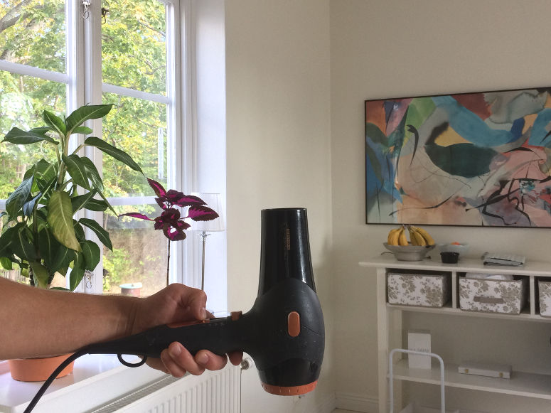
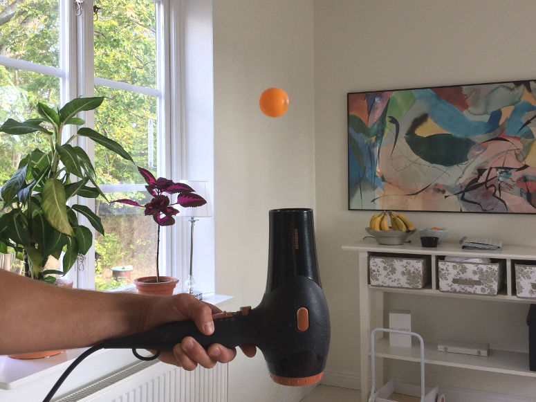
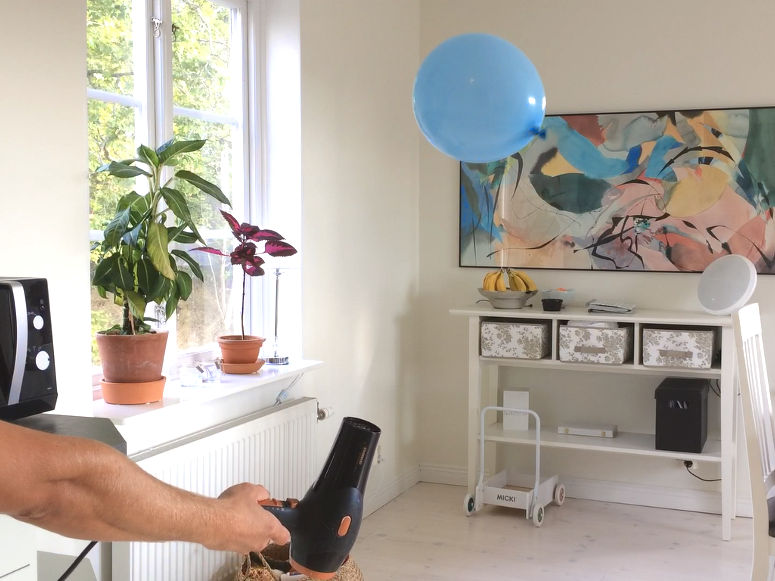
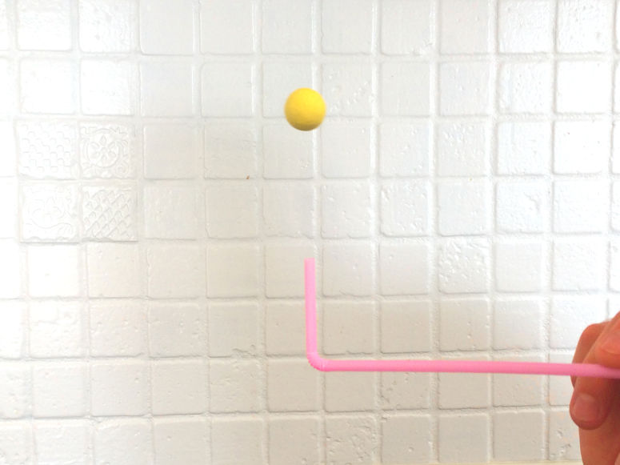

Весёлые и простые научные эксперименты для детей и взрослых.
Парящий шарик для пинг-понга

Физика
Заставьте шарик для пинг-понга парить в воздушном потоке от фена. Этот эксперимент демонстрирует принцип Бернулли.
| Нравится: | Поделиться: | |
Видео

Материалы
- 1 шарик для пинг-понга
- 1 фен
Шаг 1


Шаг 2

Объяснение
Этот эксперимент иллюстрирует принцип Бернулли. Принцип гласит, что чем быстрее воздух движется над объектом, тем меньше давление воздуха на этот объект (давление воздуха ниже).Принцип Бернулли объясняет, почему шарик для пинг-понга удерживается в воздушном потоке над феном. Когда шарик находится в потоке воздуха, он окружён воздухом с низким давлением. Но если шарик пытается покинуть поток, он сталкивается с неподвижным воздухом вокруг. Поскольку этот воздух неподвижен, его давление выше, то есть он сильнее давит на шарик и возвращает его обратно в поток, где давление ниже.
Причина, по которой шарик также удерживается на определённой высоте, заключается в том, что восходящее давление воздушного потока на этой высоте уравновешивает силу тяжести, действующую на шарик.
Эксперимент
Вы можете превратить эту демонстрацию в эксперимент. Это сделает её отличным научным проектом. Для этого попробуйте ответить на один из следующих вопросов. Ответ на вопрос будет вашей гипотезой. Затем проверьте гипотезу, выполнив эксперимент.- Насколько сильно можно наклонить фен, чтобы шарик не упал?
- С какой скоростью можно двигать фен вбок, чтобы шарик не упал?
- Сколько шариков можно удержать в воздухе одновременно?
- Какие ещё предметы можно заставить парить над феном?
Вариации
Вы получите красивый фонтан из туалетной бумаги, если надеть рулон туалетной бумаги на палочку и поместить его над феном (нужен очень мощный фен).Затем возьмите пустой рулон, поместите его над парящим шариком для пинг-понга и посмотрите, как шарик засасывается внутрь рулона!


| Нравится: | Поделиться: | |
Содержание сайта
© The Experiment Archive. Весёлые и простые научные эксперименты для детей и взрослых. Биология, химия, физика, науки о Земле, астрономия, технологии, огонь, воздух и вода. Для детского сада, школы, после школы и дома. Также научные проекты и руководство для учителя.
Наверх
© The Experiment Archive. Весёлые и простые научные эксперименты для детей и взрослых. Биология, химия, физика, науки о Земле, астрономия, технологии, огонь, воздух и вода. Для детского сада, школы, после школы и дома. Также научные проекты и руководство для учителя.
Наверх
The Experiment Archive by Ludvig Wellander. Весёлые и простые научные эксперименты для школы и дома. Биология, химия, физика, науки о Земле, астрономия, технологии, огонь, воздух и вода. Фото и видео.